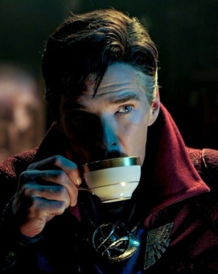
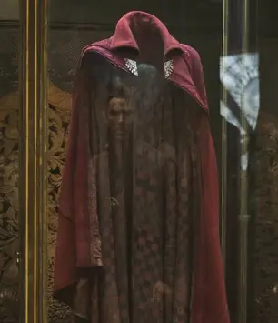
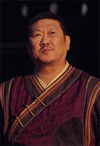
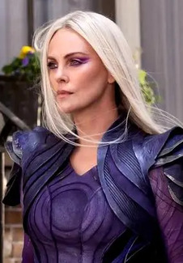

For a comic series that's been around since the 60's, it's no surprise that its characters would become beautifully complex over the years. Listed below are my thoughts on them. This page will continue to update as more characters are added.
Dr. Stephen Vincent Strange, M.D., Ph.D.
Tea time
Starting strong with the good doctor himself from the Marvel Cinematic Universe! I first heard about MCU!Stephen when an ex-friend, who was obsessed with Benedict Cumberbatch's portrayal of Smaug from the Hobbit, informed me that he was going to be Doctor Strange. I had little interest in the Marvel films and Cumberbatch, so I was completely out of the loop until I saw Multiverse of Madness.
I'm embarrassed to admit this, but I was immediately interested in Stephen when I noticed he talked like a normal person. He used everyday speech and rarely (if not never) used eloquent or "hammy" language like his comic counterpart, or typical sorcerers, would. He was surprisingly modern for a Master of the Mystic Arts, and I had to learn more about him.
On top of his modern speech anqd snarky personality, what really drew me to Stephen was the fact that even as a skilled Sorcerer, he's always improving and becoming a better person, making him a relatable character for someone who recently turned 30. People are always changing and learning something new, even if they are past their 30s, and I think Stephen is a perfect example of that.
I've seen a lot of Strange fans who aren't too pleased with this interpretation of Stephen, many of them claiming that he was incredibly nerfed in the MCU and was not the "Sorcerer Supreme", a position given only to one worthy Sorcerer. I don't know if Stephen will ever become Sorcerer Supreme in the films, but I honestly hope he doesn't. I would list my reasons for having this opinion, but I think I'll save that for a future article. For now, I honestly love Stephen as how he's depicted in the MCU: a "cute and mischievous gentleman" as Shirakami Fubuki has called him.
Going into fangirl mode for a bit here, but like, I believe Doctor Strange is the absolute cutest character in the MCU. Perhaps it's because of Benedict Cumberbatch, or perhaps it's the choices the writers made in designing his character for the MCU films. Maybe it's both? Either way, he's adorable and I want to ruffle his hair.
The Cloak of Levitation
The Cloak will be referred to with masculine pronouns in this analysis.
Hello, bestie
Despite being an important item in the Doctor Strange comics, the Cloak of Levitation was never given sentience or a personality until Stephen's debut film in the MCU. I can't tell you how surprised I was seeing that he was able to move on his own in MoM.
After watching the films and familiarizing myself with the character, I honestly adore the concept of Stephen having a sentient cloak as his partner. Their relationship is rather unheard of, but not completely new, as similar relationships have been seen with Aladdin and the Magic Carpet from the Disney films, and Ryuko Matoi and Senketsu from KILL la KILL.
Magical relics in the MCU choose their wielders and, according to sorcerers, Cloak is a fickle thing. As stated by the Ancient One, forming a bond with the Cloak is no mere feat, indicating that no other sorcerer had been able to use the ancient relic until Stephen stumbled into the New York Sanctum. There's no given reason why Cloak chose Stephen as his partner; many have theorized that he was "bored in that glass display case", but others believe he "needed someone to match [his] own pettiness", which is a theory that I personally hold onto.
Although Stephen uses Cloak primarily as a tool, Stephen has shown to be kind to the relic, always talking to him with a soft voice, even when Cloak got on the sorcerer's nerves, and it's this kind of relationship that I enjoy so much. The two can butt heads sometimes, but overall, they have become inseparable and it's this interesting dynamic that got me and my wife hooked on the two, having come up with many different scenarios between the two. In fact, my wife is working on a fanfiction that involves a spell that turns Cloak into a human, and I hope people would be interested to read it when it is eventually posted online. :)
Wong
Lover of tuna melts
Former librarian of Kamar-Taj and current Sorcerer Supreme, I did not expect Wong to be such an enjoyable character. Not that I didn't like him before, but I never really gave him much thought. I thought he was pretty cool in Multiverse of Madness, but seeing his other appearances and then watching the film again, Wong has become one of my favorite Doctor Strange characters! I was actually pretty surprised to learn he was originally Stephen's servant in the comic books, and thank GOD that isn't the case in the MCU. While Wong is subservient to Stephen in the comics, the two almost always bicker in the MCU which makes for some hilarious moments between the two.
As mentioned in Stephen's section, the title of "Sorcerer Supreme" is only given to sorcerers who are deemed worthy of the title. I don't know who or what makes the decision to choose the Sorcerer Supreme, but while the comics imply that it is heriditary, it seems like all the sorcerers within the MCU decide who should inherit the title. With the Ancient One having recently passed away and Stephen's absence due to the Thanos's "snap" from Infinity War, the title was passed down to Wong, who I think is perfect for the role with his leadership skills. Let's face it: Stephen may be one of the most powerful sorcerers, but with how often he breaks the rules, he isn't suited for administrative roles lol
Like many of the Doctor Strange characters in the MCU, we know very little about Wong, and yet he's one of the most fleshed out characters next to Stephen. He's strict and doesn't tolerate nonsense, but he has a good sense of humor and formed an unexpected brotherly bond with Stephen. He chews Stephen out sometimes for breaking the rules, but he's always there to help the troublesome doctor get out of a bind or two.
I just. Wong is really great, ok!!!
Clea
Since this character does not have a prominent role in the films yet, this analysis will mostly talk about her comic book counterpart.

Many can agree that while comic book writers don't really know how to write female characters, Clea has remained a beloved character to many Doctor Strange fans to this day...and I don't understand why.
Clea is another character I did not know about until I saw Multiverse of Madness, when she appeared once in a post-credits scene.
I liked her when I first saw her! She was pretty and looked super serious and tough. She gave me the same vibes as Captain Marvel, and I thought she was another character crossing over from another comic series who would come to help Stephen. I then found out that she is the love interest and eventual wife of Doctor Strange in the comics. As I learned more about her, the more I started to despise her as a character.
I feel like Clea has the potential to be a great female character. When I think about well-written characters who started out as love interests to our heroes, I think of Mary-Jane Watson and Gwen Stacy. All media can't be expected to be perfect, but there's definitely been a lot more progress in writing likeable characters and making them more than "just a love interest". I don't feel that way towards Clea, though. Even in recent comics, her motives don't seem to branch out more than just "I am Stephen's wife", and it's really frustrating to see how she's praised as a "well-written" character by so many fans.
If she is to appear in another MCU production, I'm sure the writers will do justice to her character, but I honestly would prefer if she doesn't show up at all.